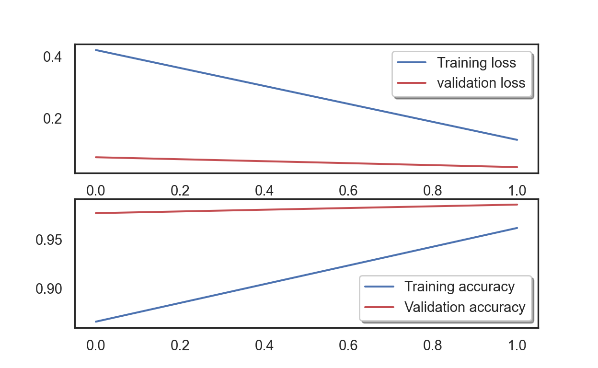

What is deep learning? Why does it have to be that name?
As we may have experienced, there has been a lot of progress made on developing computer vision systems that can recognize images such as the Facebook tagging system, speech recognition (ever use Google home or Alexa?), and even medical image analysis of cancer cell or injury from X-ray images. A lot of the mentioned technologies are based on deep learning, which is a machine learning technique that teach machines to go through similar learning process as humans (or as close as it can be). For this entry, it is basically like I am teaching toddlers to recognize numbers, but they learn at a much faster rate because they are machines (well, I dont have to feed them, and they dont cry when I ordered them to go through like 1000 math questions).
The adjective deep comes from the fact that the structure of this algorithm comprises of multiple layers of network between the input and the output, and that we could hardly explain what is going on in the middle of the process. We only know if the computer learns or not; for that, this machine learning approach is also known as the black box approach.

Preparation
- Before we dive in, let us load the essential libraries to read the data, plot the graphs, and construct a neural network algorithm.
Show code
import pandas as pd
import numpy as np
import matplotlib.pyplot as plt
import matplotlib.image as mpimg
import seaborn as sns
np.random.seed(2)
from sklearn.model_selection import train_test_split
from sklearn.metrics import confusion_matrix
import itertools
from keras.utils.np_utils import to_categorical # convert to one-hot-encoding
from keras.models import Sequential
from keras.layers import Dense, Dropout, Flatten, Conv2D, MaxPool2D
from tensorflow.keras.optimizers import RMSprop
from keras.preprocessing.image import ImageDataGenerator
from keras.callbacks import ReduceLROnPlateau
sns.set(style='white', context='notebook', palette='deep')We will load the training and testing data set to train the machine and test whether the machine has learned as intended. Normally, data for machine learning are in forms of texts or numbers, but if our algorithm is complex enough, it can even process images or sounds.
I have also plotted the distribution of all training digit images below (0 to 9). The training data set has 42,000 images and the testing data set has 28,000 images.
Show code
# Load the data
train = pd.read_csv("train.csv")
test = pd.read_csv("test.csv")
Y_train = train["label"]
# Drop 'label' column
X_train = train.drop(labels = ["label"],axis = 1)
g = sns.countplot(Y_train)C:\Users\tarid\ANACON~1\lib\site-packages\seaborn\_decorators.py:36: FutureWarning: Pass the following variable as a keyword arg: x. From version 0.12, the only valid positional argument will be `data`, and passing other arguments without an explicit keyword will result in an error or misinterpretation.
warnings.warn(Show code
plt.show()Show code
Y_train.value_counts()
#Check for missing value
# Check the data1 4684
7 4401
3 4351
9 4188
2 4177
6 4137
0 4132
4 4072
8 4063
5 3795
Name: label, dtype: int64Show code
X_train.isnull().any().describe()count 784
unique 1
top False
freq 784
dtype: objectShow code
test.isnull().any().describe()
#Normalization
# Normalize the datacount 784
unique 1
top False
freq 784
dtype: objectShow code
X_train = X_train / 255.0
test = test / 255.0
# Reshape image in 3 dimensions (height = 28px, width = 28px , canal = 1)
X_train = X_train.values.reshape(-1,28,28,1)
test = test.values.reshape(-1,28,28,1)
# Encode labels to one hot vectors (ex : 2 -> [0,0,1,0,0,0,0,0,0,0])
Y_train = to_categorical(Y_train, num_classes = 10)We will also take a portion of training data set out for validation purpose as well. We will call it, the validation set. The validation data set is usually used to estimate how well the model has been trained. Basically, it is like a mock exam for the machine before the real test with the testing set, so that teachers will know which kid (or in our case, algorithm) is the brighest among the cohort.
We will also print a sample of images below. It is a simple number image.
Show code
# Set the random seed
random_seed = 2
# Split the train and the validation set for the fitting
X_train, X_val, Y_train, Y_val = train_test_split(X_train, Y_train, test_size = 0.1, random_state=random_seed)
# Some example
g = plt.imshow(X_train[0][:,:,0])
plt.show()Convolutional Neural Network (CNN)
Now comes the main part. We will build a machine architecture of five layers convolutional neural network - a class of artificial neural network that takes after a human brain - to perform digit recognition.
Here, we will add one-layer at a time starting from the input layer (remember the picture above). It is like peeling an onion, but instead of peeling, you are sticking each layer together to form one (I know it is not a good analogy).
Then, we will add a convolutional (Conv2D) layer as the first layer with 32 filters to filter the number image. The second layer also has 32 filters, and the last two layers have 64 filters. Each filter transforms a part of the image for the machine to memorize.
## WARNING: Things could get a bit nerdy technical here. Skip if you dont understand
ATTN NERDS: The second important layer in CNN is the pooling (
MaxPool2D) layer for the machine to look at the two neighboring pixels in a picture and picks the maximal value, so that it has more clue to classify which image contains which number. This technique can be used to reduce overfitting (where the machine learns too much of the training data and unable to use what it learns with the actual test) and computational cost.ATTN NERDS: We will then use the
reluactivation function to add non-linearity to the network and use the Flatten layer is use to convert the final feature maps into a one single 1D vector. At the end, the two fully-connected (Dense) layers were added as artificial an neural networks (ANN) classifiers with thesoftmaxactivation function to compute the probability distribution of each class.
Show code
# my CNN architechture is In -> [[Conv2D->relu]*2 -> MaxPool2D -> Dropout]*2 -> Flatten -> Dense -> Dropout -> Out
model = Sequential()
model.add(Conv2D(filters = 32, kernel_size = (5,5),padding = 'Same',
activation ='relu', input_shape = (28,28,1)))
model.add(Conv2D(filters = 32, kernel_size = (5,5),padding = 'Same',
activation ='relu'))
model.add(MaxPool2D(pool_size=(2,2)))
model.add(Dropout(0.25))
model.add(Conv2D(filters = 64, kernel_size = (3,3),padding = 'Same',
activation ='relu'))
model.add(Conv2D(filters = 64, kernel_size = (3,3),padding = 'Same',
activation ='relu'))
model.add(MaxPool2D(pool_size=(2,2), strides=(2,2)))
model.add(Dropout(0.25))
model.add(Flatten())
model.add(Dense(256, activation = "relu"))
model.add(Dropout(0.5))
model.add(Dense(10, activation = "softmax"))
# Summarize the model
model.summary()Model: "sequential"
_________________________________________________________________
Layer (type) Output Shape Param #
=================================================================
conv2d (Conv2D) (None, 28, 28, 32) 832
conv2d_1 (Conv2D) (None, 28, 28, 32) 25632
max_pooling2d (MaxPooling2D (None, 14, 14, 32) 0
)
dropout (Dropout) (None, 14, 14, 32) 0
conv2d_2 (Conv2D) (None, 14, 14, 64) 18496
conv2d_3 (Conv2D) (None, 14, 14, 64) 36928
max_pooling2d_1 (MaxPooling (None, 7, 7, 64) 0
2D)
dropout_1 (Dropout) (None, 7, 7, 64) 0
flatten (Flatten) (None, 3136) 0
dense (Dense) (None, 256) 803072
dropout_2 (Dropout) (None, 256) 0
dense_1 (Dense) (None, 10) 2570
=================================================================
Total params: 887,530
Trainable params: 887,530
Non-trainable params: 0
_________________________________________________________________After the model is constructed, we need to set up how we will optimize the algorithm as well as how to evaluate its result. We define the loss function to measure how poorly our model performs on images with known labels with the
categorical_crossentropymethod.
Here, we are setting
epochsto 2 to have the machine go through the entire data set exactly TWO times. Its like you order your kids to do the homework, then erase them all and have them do it again entirely after they are done (I know, its not a good parenting). We also setbatch_sizeto 86, which means 86 images will be present at a time to the machine. We cannot have the machine read 40,000 images at once, or you could if you have a god-level CPU (maybe NASA or MIT can provide you one).We can have the machine go through the data more than two times (say, 30) for 99% accuracy, but that would take an hour or two to train it. For demonstration purposes, I will request for only two training rounds.
Show code
#%% Set the optimizer and annealer
# Define the optimizer
optimizer = RMSprop(learning_rate=0.001, rho=0.9, epsilon=1e-08, decay=0.0)
# Compile the model
model.compile(optimizer = optimizer , loss = "categorical_crossentropy", metrics=["accuracy"])
# Set a learning rate annealer
learning_rate_reduction = ReduceLROnPlateau(monitor='val_loss',
patience=3,
verbose=1,
factor=0.5,
min_lr=0.00001)
epochs = 2 # Turn epochs to 30 to get 0.9967 accuracy
batch_size = 86Data augmentation
To avoid overfitting, which makes the machine learn more than it needs to, we will augment the image data by alter the training image a bit to reproduce the variations occurring when someone is writing a digit. You know, when you want your kids to learn well, you make the homework a little bit challenging.
By applying just a couple of these transformations to our training data, we create a robust model and got a higher accuracy in the result.
Show code
# With data augmentation to prevent overfitting (accuracy 0.99286)
datagen = ImageDataGenerator(
featurewise_center=False, # set input mean to 0 over the dataset
samplewise_center=False, # set each sample mean to 0
featurewise_std_normalization=False, # divide inputs by std of the dataset
samplewise_std_normalization=False, # divide each input by its std
zca_whitening=False, # apply ZCA whitening
rotation_range=10, # randomly rotate images in the range (degrees, 0 to 180)
zoom_range = 0.1, # Randomly zoom image
width_shift_range=0.1, # randomly shift images horizontally (fraction of total width)
height_shift_range=0.1, # randomly shift images vertically (fraction of total height)
horizontal_flip=False, # randomly flip images
vertical_flip=False) # randomly flip images
datagen.fit(X_train)
# Fit the model
history = model.fit(datagen.flow(X_train,Y_train, batch_size=batch_size),
epochs = epochs, validation_data = (X_val,Y_val),
verbose = 2, steps_per_epoch=X_train.shape[0] // batch_size
, callbacks=[learning_rate_reduction])Epoch 1/2
439/439 - 127s - loss: 0.4209 - accuracy: 0.8659 - val_loss: 0.0737 - val_accuracy: 0.9774 - lr: 0.0010 - 127s/epoch - 290ms/step
Epoch 2/2
439/439 - 130s - loss: 0.1301 - accuracy: 0.9622 - val_loss: 0.0418 - val_accuracy: 0.9862 - lr: 0.0010 - 130s/epoch - 297ms/stepModel evaluation
- Below are plots that evaluate accuracy of the model. With two epochs, the model achieved 95% accuracy when reading the image data with 0.04 error rate. See that the
loss(or error) is going down while the accuracy is going up. With more training round (epochs), the accuracy would go even higher.
Show code
# Plot the loss and accuracy curves for training and validation
fig, ax = plt.subplots(2,1)
ax[0].plot(history.history['loss'], color='b', label="Training loss")
ax[0].plot(history.history['val_loss'], color='r', label="validation loss",axes =ax[0])
legend = ax[0].legend(loc='best', shadow=True)
ax[1].plot(history.history['accuracy'], color='b', label="Training accuracy")
ax[1].plot(history.history['val_accuracy'], color='r',label="Validation accuracy")
legend = ax[1].legend(loc='best', shadow=True)
plt.show()
- The confusion plot below shows that the model did pretty well, with some errors when the machine classified 4 as 9.
Show code
#%% Confusion matrix
def plot_confusion_matrix(cm, classes,
normalize=False,
title='Confusion matrix',
cmap=plt.cm.Blues):
"""
This function prints and plots the confusion matrix.
Normalization can be applied by setting `normalize=True`.
"""
plt.imshow(cm, interpolation='nearest', cmap=cmap)
plt.title(title)
plt.colorbar()
tick_marks = np.arange(len(classes))
plt.xticks(tick_marks, classes, rotation=45)
plt.yticks(tick_marks, classes)
if normalize:
cm = cm.astype('float') / cm.sum(axis=1)[:, np.newaxis]
thresh = cm.max() / 2.
for i, j in itertools.product(range(cm.shape[0]), range(cm.shape[1])):
plt.text(j, i, cm[i, j],
horizontalalignment="center",
color="white" if cm[i, j] > thresh else "black")
plt.tight_layout()
plt.ylabel('True label')
plt.xlabel('Predicted label')
# Predict the values from the validation dataset
Y_pred = model.predict(X_val)
# Convert predictions classes to one hot vectors
Y_pred_classes = np.argmax(Y_pred,axis = 1)
# Convert validation observations to one hot vectors
Y_true = np.argmax(Y_val,axis = 1)
# compute the confusion matrix
confusion_mtx = confusion_matrix(Y_true, Y_pred_classes)
# plot the confusion matrix
plot_confusion_matrix(confusion_mtx, classes = range(10))
plt.show()
- We will also print out six most challenging errors for the machine as well.
Show code
#%% Check error result
# Display some error results
# Errors are difference between predicted labels and true labels
errors = (Y_pred_classes - Y_true != 0)
Y_pred_classes_errors = Y_pred_classes[errors]
Y_pred_errors = Y_pred[errors]
Y_true_errors = Y_true[errors]
X_val_errors = X_val[errors]
def display_errors(errors_index,img_errors,pred_errors, obs_errors):
""" This function shows 6 images with their predicted and real labels"""
n = 0
nrows = 2
ncols = 3
fig, ax = plt.subplots(nrows,ncols,sharex=True,sharey=True, figsize=(10,10))
for row in range(nrows):
for col in range(ncols):
error = errors_index[n]
ax[row,col].imshow((img_errors[error]).reshape((28,28)))
ax[row,col].set_title("Predicted label :{}\nTrue label :{}".format(pred_errors[error],obs_errors[error]))
n += 1
# Probabilities of the wrong predicted numbers
Y_pred_errors_prob = np.max(Y_pred_errors,axis = 1)
# Predicted probabilities of the true values in the error set
true_prob_errors = np.diagonal(np.take(Y_pred_errors, Y_true_errors, axis=1))
# Difference between the probability of the predicted label and the true label
delta_pred_true_errors = Y_pred_errors_prob - true_prob_errors
# Sorted list of the delta prob errors
sorted_dela_errors = np.argsort(delta_pred_true_errors)
# Top 6 errors
most_important_errors = sorted_dela_errors[-6:]
# Show the top 6 errors
display_errors(most_important_errors, X_val_errors, Y_pred_classes_errors, Y_true_errors)
plt.show()- As you can see, the numbers are actually confusing and the error is understandable for some cases. Sometimes, people actually made this kind of error when they write their numbers hastily or with bad handwriting. Even human could get this wrong at some point.
Final remarks and Conclusions
Deep learning is a very powerful approach to develop advanced tools that go beyond the capability of traditional machine learning tasks in analyzing unstructured data such as images, videos, and sounds - including musics. With robust tools developed based on this algorithm, we could significantly reduce workload for human labor.
The thing is, there are also numerous down sides of this algorithm as well. We would need a lot of data to develop an accurate model, and I mean a lot as in ten thousand or more. Even with that much data, the accuracy could drop as well as we, humans, change our way of living (like how we changed from watching cable TV to Netflix); then, we would need more data to train or even a new machine architecture to predict new features that we are interested in.
The explainability (the ability to be explained) of the model is clear as mud (TL: It is NOT clear). I mean, yes, we know that the machine can learn and classify number images, but we dont actually know step-by-step procedures of how it works on the inside. For normal machine learning tasks such as logistic regression, there is a mathematics formula or two for those who are curious on how what makes the machine ticks, but that doesnt seem to be the case for deep learning. See explanable AI for how experts remedy this problem.
The explainability drawback is especially critical for us academics. While we seek results, we also care to explain how we obtained that results in the process. That is why we tend to receive a lot of pushbacks when we use complex models that we cannot explain; for this reason, simpler model is preferred if it can accomplish the task with similar, if not the same, performance. Explanability is usually (a little bit) preferred over accuracy in our case.
Nevertheless, it is also important to know how the algorithm works (roughly), so that we are aware of what makes Facebook able to automatically tag our friends or show you advertisements about the thing you talked about, what makes Shazam able to identify musics and movies, and so we can potentially find the right tool should we need to accomplish similar tasks. That is why I wrote this entry to share what I know about this topic. Thank you very much for reading this. Have a good one!